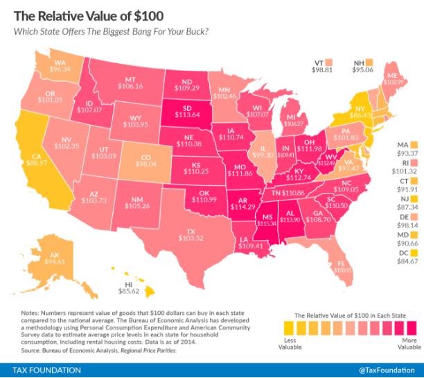

Recently the Tax Foundation published a map, widely reported by local media, of the relative value of $100 in each state with the lowest value in DC. While the data is accurate, the results are misleading and overstate the cost of living in DC compared to the rest of the U.S.

The map, shows DC to have the lowest relative value of $100 at $84.67. The data is accurate, but it is also a disingenuous conclusion. Regardless of the state of DC statehood, DC is wholly urban and should not be compared to states. Urban areas are generally more expensive, dense, and diverse than rural areas. Any U.S. state has a variety of rural, suburban, and urban areas which would be aggregated at the state-level. A more accurate comparison for DC would be to other cities or, as in the map below, comparing the relative value of $100 in DC metro areas to other metro areas.
When comparing by metro areas, the DC region comes in seventh for the relative value of $100. DC is expensive, but it is not the most expensive place in America as the first map may suggest. Once again, this is an accurate depiction of the data, but fails to tell the whole story. How far $100 goes is an important measure, but should be balanced with how much time is takes to make $100. Urban areas are more expensive to live in, they also tend to have higher wages. I’ve created the map below to illustrate this point. The data shown is how many hours the median person would have to work to gain the relative value of $100, adding Bureau of Labor Statisics median hourly wage to the Tax Foundation analysis.
Despite the lower relative value of $100 in the DC region, the median wage is so high that residents have to work less for the same value compared to much of the rest of the country. Areas with the most relative value of $100, mostly in the South and Midwest, also tend to have lower wages and it actually takes those residents longer to earn the same value. The DC region is expensive and does face affordability challenges, but selectively choosing data distorts the real picture.
Technical notes: Data are available through the Bureau of Labor Statistics and the Bureau of Economic Analysis. You can find complete code for this on my github page, as well as the Tax Foundation's github page.